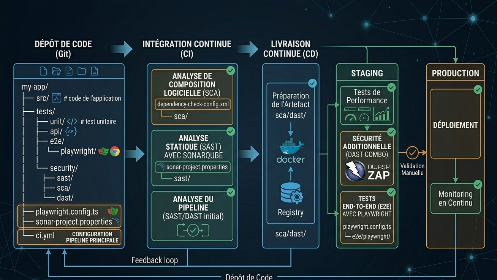

Stratégie, Compromis et Vision DevOps
Les tests vivent avec le code.

Un seul test instable (Flaky Test) bloque les déploiements de tous les projets.
Effet domino : Blocage complet de la chaîne de livraison.
Modifications massives sur les fichiers partagés (configs, mocks, data).
Friction : Perte de temps majeure pour synchroniser l'ensemble de l'équipe.
L'extrême lenteur de la CI pousse l'équipe à ignorer les alertes ou "skip" les tests.
Risque Équipe : Désengagement collectif face à une validation trop pesante.
L'application est déployée en quelques minutes. Les tests E2E s'exécutent en tâche de fond.
On choisit l'outil le plus performant pour le test (Playwright, Python...) sans contrainte.
Séparation des accès. Les testeurs sont maîtres de leur propre cycle de vie.
Écart de version entre code et tests.
Orchestration complexe (Triggers).
Double PR obligatoire.
| Critère de choix | Architecture Mono-repo | Architecture Multi-repo |
|---|---|---|
| Feedback Loop | Immédiat Échec avant merge. Sécurité max. | Différé Échec après déploiement. Risque de rollback. |
| Maintenance PR | Simplifiée 1 seule PR pour le code et les tests. | Double effort 2 PRs distinctes à synchroniser manuellement. |
| Complexité Ops | Nulle Pipeline standard et linéaire. | Élevée Nécessite triggers, webhooks et secrets. |
| Autonomie QA | Limitée QA dépend du cycle de vie des Devs. | Totale QA maître de ses outils et de son rythme. |
| Time-to-Market | Modéré Le build est ralenti par les tests. | Très Rapide Le déploiement est quasi-instantané. |